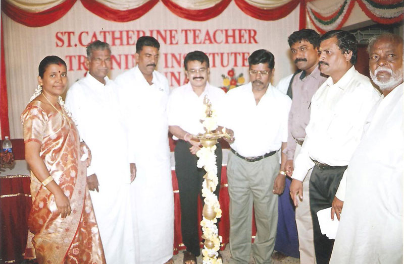

Welcome to Our Website!

Women in any society constitute almost half of the labour force. Education empowers women with knowledge, skills and self-confidence necessary to participate in the process of nation building.
The future of a nation depends on the way teachers abilities and their influence on the process of children's personality development. Thus to participate in the creation of vibrant and Post-modern India. Le consal Bountiful Trust, a Service oriented organization opened a new chapter in the field of teacher Education St. Catherine Teacher Training Institute since 2005.
The primary aim of this fledging Institution is to impart value education and bring about all around development among the teacher trainees in order to equip them to face the grave challenges of the new millenium.
Along with academic excellence we instill and develop in our students a sense of social moral and ethical values so that they emerge as professional teahcers who care for the emotional and intellectual well-being of the future generation.
Our Institution with its well developed infrastructure and hostel facilities provide a conductive homely atmosphere for developing spiritual, humenitarien values and character building among the trainee teachers student's potentials are identified and given enough exposure by participating in cultural and linguistic and other intellecutal persuits.
As teaching is a profession that demands more societal conscious we provide ample opportunities for our students to organize and participate in variolus social events like medical camps, Awareness Campaigns, First Aid Camps, SUPW workshops etc.
"The end of all education all training should be man-making".
(Swamy Vivekananda)
The vision and mission of our institution is to make selfless, efficient teachers and further contribute to nation building. Our Institution provides room for all the down trodden, an equal opportunity to avail quality education. Our Institution with its dynamic head and group of well-trained faculty work towards manifesting the hidden powers of our students and to see to that their innate powers are developed in an appropriate way. Through this, we share a part of developing a competent team of teachers. who serve as mentors in building a knowledge society.
"Honesty, Service and Humanity" are three pillars of our Institution and we instill the same on the mind and spiritof our students.
{kind=link}